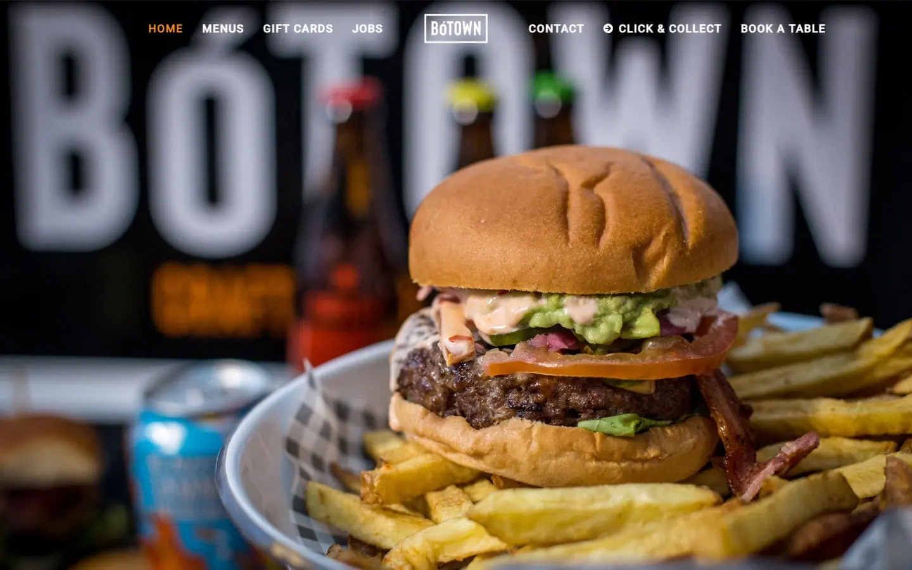
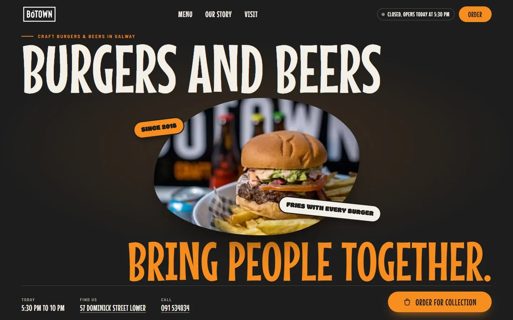
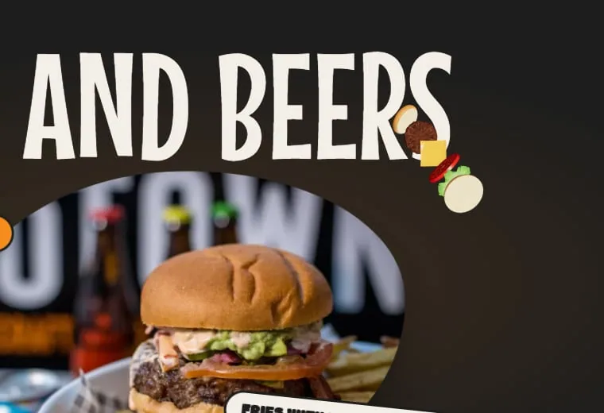
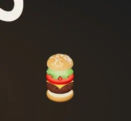
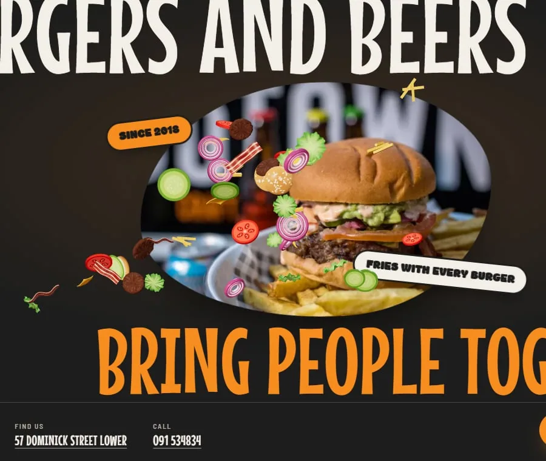
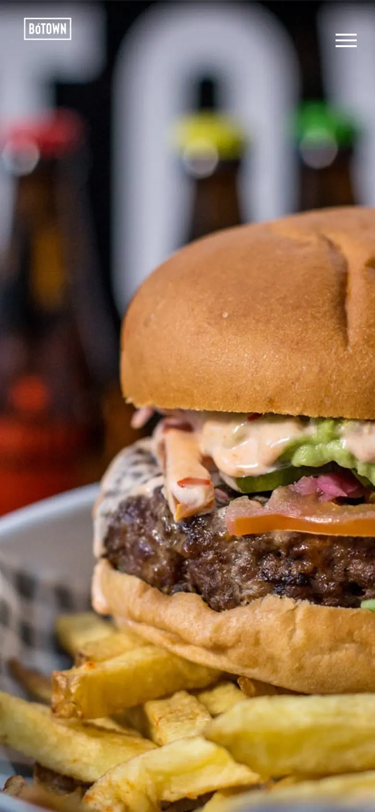
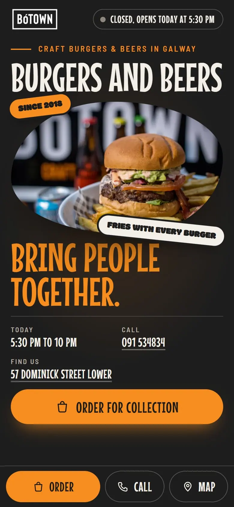
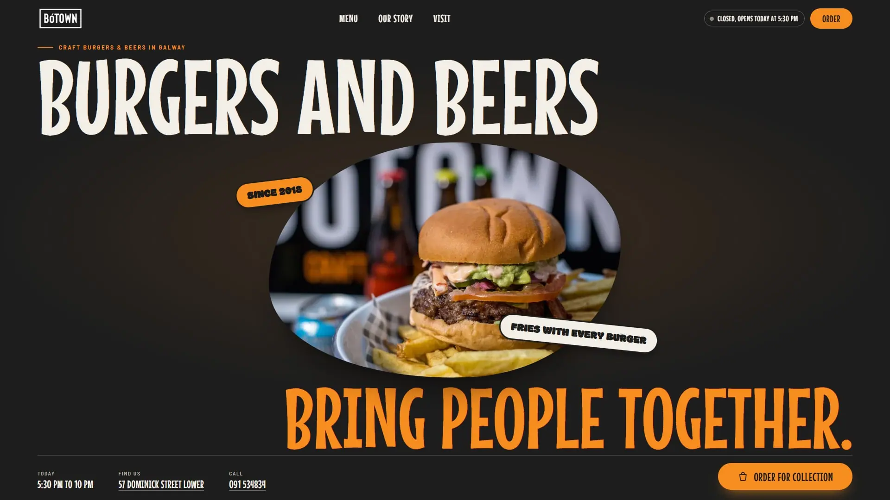
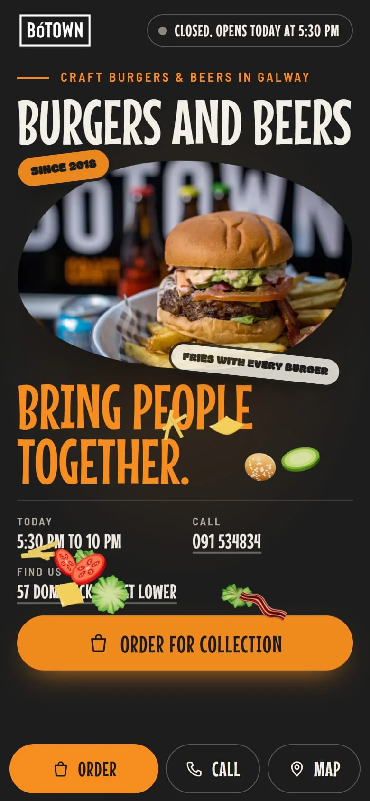

BóTOWN







- Slogan
- “Burgers and beers bring people together.”kendi cümlesi (ana sayfa, Frank & David mektubu): "Burgers and beers bring people together and the seeds for BóTOWN were first sown during one of our summer barbecue parties.". Kendi sloganı "Craft Burgers & Beers in Galway" doğru ama tanımlayıcı; üst etikette duruyor. Büyük başlık, kurucuların kendi cümlesi: ne sattıklarını ve mekânın ruhunu tek cümlede söylüyor, iddia içermiyor.
- Logo
- Kendi dosyası, bayt bayt aynı (PNG, 600×339; sha256 eşleşiyor). Renk, kırpma, filtre ve oran değişmedi.
- Fontlar
- Mouse Memoirs: başlık, düğme, menü adı ve fiyat
Modak: etiket (sticker)
Barlow Semi Condensed: gövdeBaşlık ve etiket fontları referansın kendi fontları (ikisi de SIL OFL, ücretsiz, birebir aynısı). İşletmenin sitesi gövdede Roboto kullanıyor; o, kurallarımızda jenerik sayılıyor, yerine okunaklı dar grotesk Barlow Semi Condensed. Dosyalar kendi sunucumuzdan woff2. - Referanstan
- Poster kahraman (dev slogan, ortada ürün karesi, dönük etiketler), akan menü şeridi, eğik fotoğraf kartları, dalga kenarlı marka bandı, ekrana sabitlenen tam fotoğraf, dev dış çizgili altbilgi yazısı, imleç zinciri tekniği ve fontlar.
- İmza hareket
- İmleç zinciri (referansın imza hareketi): malzemeler imlecin peşinden gelir; bizde 3D döner, durunca burger olur, telefonda dokunmayla da çalışır.
- Ana fotoğraf
- Kendi sitesinin ilk ekran karesi: tek imza burger, poster düzeni tek ürün ister. 1:1 kırpmada burger keskin; düşük keskinlik puanı arkadaki bulanık tabeladan geliyor. Puanlayıcının birincisi (masa üstü yayılım, 09) tam genişlik bantta. Kaynak orijinal dosya, 1864×1114 px.1440 px ekranda 581×387 css px (dosya 800×478, ölçek 0,87); 1920 px ekranda 763×509 css px (dosya 1200×717, ölçek 0,77); 390 px ekranda 354×221 css px (dosya 800×478, ölçek 0,98). Sayfadaki hiçbir görsel büyütülmüyor (ölçülen en büyük ölçek 0,98; 1 üstü bulanıklık demek).
- İlk ekran
- Şimdi açık rozeti (“Closed, opens today at 5:30 pm”, işletmenin saat diliminde), bugünün saati (“5:30 pm to 10 pm”), adres (haritaya), telefon (aranır), tek ana eylem: Order YoYo gerçek sipariş bağlantısı.
- Menü
- 40 kalem, kendi adları ve fiyatlarıyla (sitenin kendi menü metni); 6 sekme (Burgers, Fries, Sides, Beers, Wines, Shakes).
- İmleç
- Tek tuval, kütüphane yok. Malzemeler (Peak Apps Studio'nun kendi 3D çizimi, 16 karelik dönüş atlası) imlecin peşinden yaylarla gelir ve 3D takla atar; imleç durunca zıplayarak üst üste oturur (üst üste burger); hızlı harekette ve tıklamada saçılır, yer çekimiyle düşer, ekranın altında bir kez seker. Bağlantı ve düğme üstünde zincir solar. Telefonda dokununca patlar, hızlı kaydırmada üstten seyrek yağar. En çok 40 parçacık, sabit havuz; döngü yalnız bir şey hareket ederken döner. Azaltılmış harekette, veri tasarrufunda ve zayıf cihazda yüklenmez.Ölçüm (1440, headless GPU): ortalama kare 5,81 ms, 24 ms üstü kare 2 / 1275; parçacık tepe 40 (üst sınır 40); 2,6 sn sonra 0; telefonda dokunmada 12 parçacık; azaltılmış harekette efekt kapalı.
- Kapı
- sorun yok. 1440, 1920 ve 390 px'te: konsol hatası 0, dış istek 0, yatay taşma yok, kutusundan taşan yazı yok, boş bölüm yok, yasak sözcük ve karakter yok; premium-web-style lint-copy 0 bulgu.

